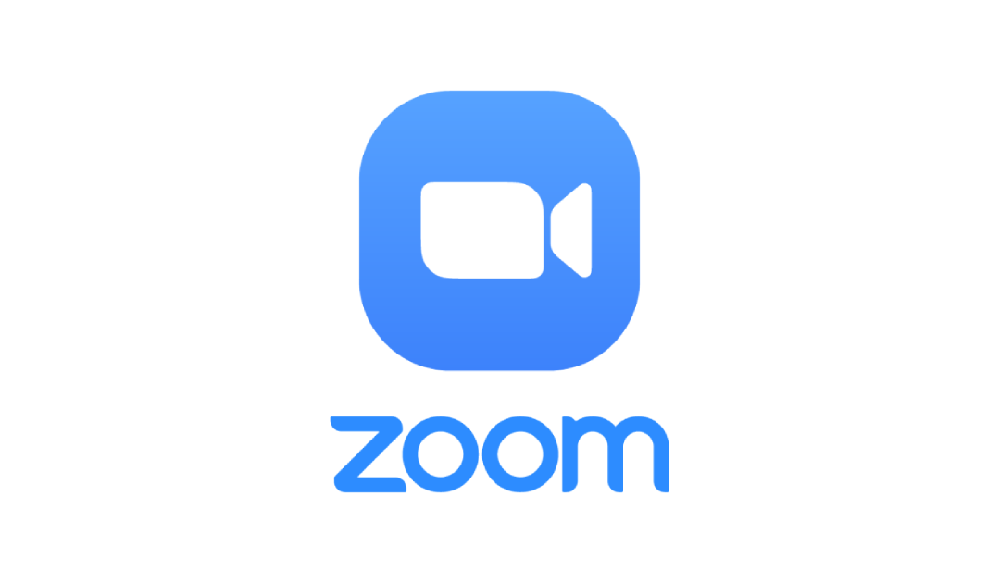

Pengertian
Pendidikan di era digital merupakan pendidikan yang harus mengintegrasikan teknologi informasi dan komunikasi ke semua mata pelajaran. Dengan berkembangnya pendidikan di era digital, sangat membantu siswa untuk mendapatkan dan banyak menyerap informasi secara cepat dan mudah.Pengertian singkat dari manajemen pendidikan merupakan salah satu bidang ilmu sosial yang pada dasarnya mempelajari tingkah laku manusia yang kegiatannya bersifat subjek dan objek. Secara filosofis, perilaku manusia terdiri dari interaksi antara manusia, iklim organisasi (organizational context) dan sistem. Ketiga interaksi ini, baik secara individu maupun kolektif, juga berinteraksi dengan lingkungan luarnya. Manajemen pendidikan di era digital ini sangat penting untuk perkembangan siswa siswi dari tingkat sekolah dasar hingga jenjang akhir dan tentunya dibantu dengan tenaga pendidik yang profesional serta mengikuti perkembangan zaman, sehingga ilmu yang disampaikan kepada anak didik tersampaikan secara runtut dan jelas serta mampu menjadikan anak didik menjadi lebih berkualitas.
Contoh Inovasi Pendidikan Di Era Digital
1. Meeting Zoom
Aplikasi Zoom merupakan salah satu aplikasi yang yang digunakan untuk bertemu secara online, kelebihan dari aplikasi ini adalah bisa digunakan di manapun dan kapanpun. Aplikasi zoom ini pertama kali banyak digunakan oleh masyarakat pada saat pandemi Covid-19 dikarenakan terdapat pembelajaran tatap muka terbatas darisitulah zoom mulai dikenal.Zoom adalah Sebuah layanan konferensi video berbasiskan cloud computing. Aplikasi tersebut dapat digunakan dalam berbagai perangkat seluler, desktop, hingga telepon dan sistem ruang. Pada umumnya, para pengguna menggunakan aplikasi ini untuk melakukan meeting hingga konferensi video dan audio.
2. English Bean
sistem pembelajaran bahasa Inggris yang dipadukan dengan permainan game secara online sehingganya siapa saja bisa berlajar bahasa Inggris secara mudah dan senang serta bisa memberikan kesan membekas tentang pembelajaran bahasa Inggris. Aplikasi penunjang belajar bahasa inggris misalnya, duo lingo.Duolingo merupakan aplikasi yang menarik dan menyenangkan karena merupakan aplikasi gamifikasi, artinya pengguna dapat belajar bahasa Inggris layaknya seperti main game karena aplikasi ini memanfaatkan metode audio visual dalam belajar.
3. Layanan Online
Sistem administrasi pada zaman era tahun 1900-an masih menggunakan manual sehingganya waktu yang dikeluarkan sangat banyak dan tidak efektif. Pendidikan tidak bisa lepas dari penggunaan sistem admnistrasi di sekolah, maka dari itu pada era digital ini lah teknologi bisa digunakan untuk memudahkan para staf sekolah dalam melayani dan memberikan pengatahuan secara daring (dalam jaringan).Shopee merupakan sebuah platform yang disesuaikan untuk tiap wilayah dan menyediakan pengalaman berbelanja online yang mudah, aman, dan cepat bagi pelanggan melalui dukungan pembayaran dan logistik yang kuat.
4.academia.edu
dengan adanya jurnal berbasis online ini bisa memudahkan para tenaga pendidik ataupun pencari referensi untuk mengakses publikasi hasil riset dan wacana akademis Indonesia ke seluruh pendunia. Adapun portal jurnal online yang bisa diakses misalnya academia.edu.Academia.edu situs jejaring sosial bagi akademisi. Kamu bisa bertukar informasi dan berbagi pengalaman dengan mahasiswa di seluruh dunia lewat situs ini.Academia.edu ini adalah Situs ini gratis, tapi ditawarkan juga fitur premium yang berbayar. Situs ini menyediakan layanan untuk kebutuhan terkait file PDF secara gratis.